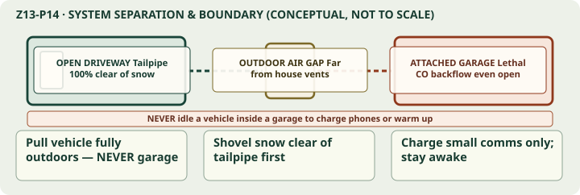

Z13-P14 · Home survival and utilities · New manuscript
Observe strict outdoor-air boundaries when using vehicles to charge phones
Prevent fatal garage or snow-trapped carbon monoxide poisoning when using an automobile as a temporary device charger or warming shelter.
When it applies · Outages where households charge phones/power banks or warm up briefly using a parked vehicle.
Equipment · 12V car USB charger, clear snow shovel for exhaust pipe, and open outdoor driveway well away from house doors/windows.

Actions
- Move the vehicle completely OUT of any attached or detached garage into completely open outdoor air before starting the engine—NEVER idle a car inside a garage even with the overhead door wide open, as lethal CO floods adjoining rooms rapidly.[C16, C07, E14]
- During snowstorms, physically inspect and clear snowdrifts away from the ENTIRE tailpipe and underbody BEFORE starting the engine, and keep a downwind window slightly cracked while remaining awake.[E14, E25, C05]
- Recognize that vehicle 12V outlets and small plug-in inverters are intended strictly for phones, radios, and low-watt battery banks—not household appliances—and avoid running down the starter battery with the engine off.[U01, U09]
Failure recognition · Starting a car inside an attached garage with the main door open to charge cell phones while CO silently fills the upstairs kitchen.[C16, C07]
Verify · Confirm vehicle sits fully outdoors away from building intakes, tailpipe is 100% snow-free, and occupants stay alert.[E14, C16]
Stop or change course · Exhaust odor, headache, drowsiness, or drifting snow closing around the vehicle requires shutting off the engine and moving into clean air immediately.[C07, E14]
Evidence and editorial notes
- C05 · CPSC · Portable Heaters and Camping Equipment (current web edition)
- Section: Carbon monoxide poisoning from portable camping equipment · Conditions: Tents, campers, vehicles and other enclosed spaces
Support: Fuel-burning camping equipment can lead to fatal carbon monoxide buildup in enclosed spaces.
Limitations: High altitude increases incomplete combustion and CO production. · Conflicting evidence: None; aligns with CDC-CO and NPS guidance.
Editorial note: Hard-stop prohibition against indoor/vestibule/tent combustion. · Specialist reviewer: Carbon monoxide safety and emergency medicine
Primary source · checked 2026-11-24 - C07 · CPSC · Carbon Monoxide Fact Sheet (current web edition)
- Section: CO poisoning symptoms; what to do if suspected · Conditions: Suspected carbon monoxide exposure
Support: Escape to fresh air immediately and contact emergency services. Symptoms can include headache, dizziness, nausea and confusion.
Limitations: CO is colorless and odorless; symptoms mimic viral illness or altitude fatigue and can incapacitate sleepers without waking. · Conflicting evidence: None; aligns with CDC-CO.
Editorial note: Standard CO emergency stop condition across Z02 and Z03. · Specialist reviewer: Carbon monoxide safety and emergency medicine
Primary source · checked 2026-11-24 - C16 · CDC · Carbon Monoxide Poisoning Basics (current web edition)
- Section: Carbon Monoxide Poisoning Basics > Sources and Prevention · Conditions: Any enclosed or semi-enclosed structure, garage, porch, tent, or vehicle
Support: Never burn charcoal, operate camp stoves, or run fuel-burning heaters inside homes, garages, tents, or vehicles even with doors or windows partly open.
Limitations: Vent cracks and open garage doors do not prevent lethal CO accumulation. · Conflicting evidence: Refutes dangerous myth that cracking a tent vent or garage door makes indoor combustion safe.
Editorial note: Hard-stop rule across all Z02 ventilation and Z03 combustion cards. · Specialist reviewer: Carbon monoxide safety and emergency medicine
Primary source · checked 2026-11-24 - E14 · NWS · What To Do If You're Caught in a Winter Storm (current web edition)
- Section: In vehicles during a winter storm · Conditions: Vehicle stranded in winter weather with no immediate vehicle hazard
Support: Stay with the vehicle if a safe nearby destination is not obvious. Make the vehicle visible and notify others when possible.
Limitations: Snow-blocked exhaust pipes create rapid lethal CO hazards if an engine is run. · Conflicting evidence: None; keeps shelter decision distinct from idling engine advice.
Editorial note: Used for stranded-vehicle shelter and exhaust-hazard checks. · Specialist reviewer: Winter response and carbon monoxide safety
Primary source · checked 2026-11-24 - E25 · FEMA / Ready.gov · Winter Weather (current web edition)
- Section: Winter Weather > Stay Safe During Winter Storms · Conditions: Extreme cold, drifting snow, and power or travel disruption
Support: Prepare layered clothing, emergency shelter/heat alternatives, and vehicle winter kits; stay indoors during blizzards, protect against frostbite/hypothermia, and keep exhaust vents and exits clear of drifting snow.
Limitations: Drifting snow can block tent vents, doors, and vehicle tailpipes silently overnight. · Conflicting evidence: None; reinforces overnight exit/vent clearance checks.
Editorial note: Supports snow-drift exit maintenance and winter shelter failure recognition. · Specialist reviewer: Cold-weather shelter and emergency management
Primary source · checked 2026-11-24 - U01 · FEMA / Ready.gov · Power Outages (current web edition)
- Section: Power Outages > Preparing and Responding Safely · Conditions: Residential utility electrical outages of hours to days
Support: Keep phones/medical batteries charged, maintain flashlights instead of candles, unplug sensitive appliances to protect against restoration surges, and verify backup power plans for electrically dependent medical devices.
Limitations: Home outage durations vary widely by grid damage; extended winter outages require heat/evacuation contingencies. · Conflicting evidence: None; aligns with CPSC and NFPA.
Editorial note: Establishes household outage baseline and medical-power priority in Z13. · Specialist reviewer: Emergency management and electrical safety
Primary source · checked 2026-11-24 - U09 · FEMA / Ready.gov · Power Outages (current web edition)
- Section: Battery Backup, Power Stations, and Lithium-Ion Safety · Conditions: Portable battery power stations, UPS units, and rechargeable packs during outages
Support: Use UL/NRTL-listed battery stations within rated wattage limits, charge and store lithium batteries away from combustible bedding/exits, stop using swollen or overheated packs, and account for cold-weather battery capacity loss.
Limitations: Portable battery banks cannot safely power high-draw electric resistance heaters or hardwired furnaces without approved transfer equipment. · Conflicting evidence: None; separates clean indoor battery backup from fuel-combustion hazards.
Editorial note: Grounds portable power sizing, inverter limits, and battery fire safety. · Specialist reviewer: Electrical safety and fire prevention
Primary source · checked 2026-11-24
Source lineage · CPSC Carbon Monoxide and NWS Winter Storm; new manuscript · Classification · New manuscript.